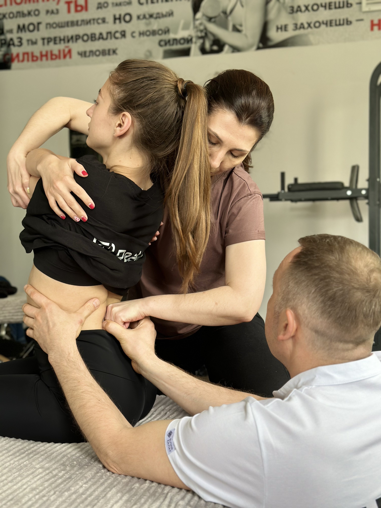
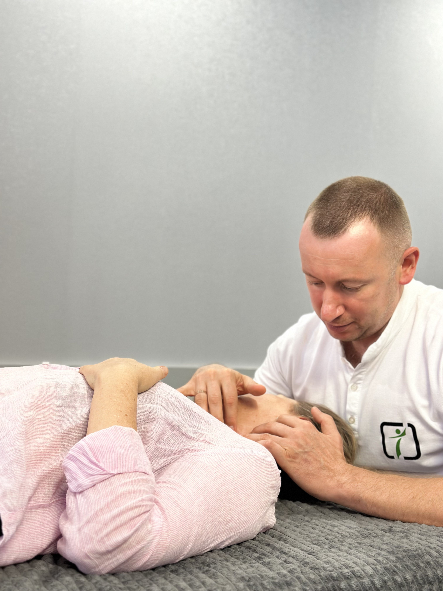
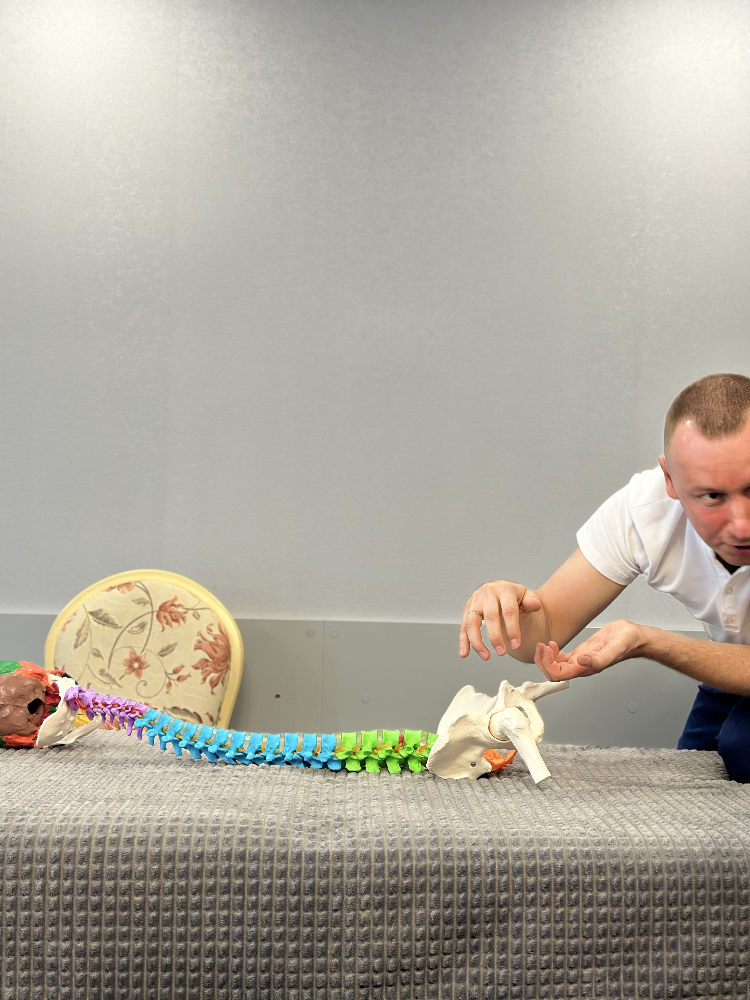
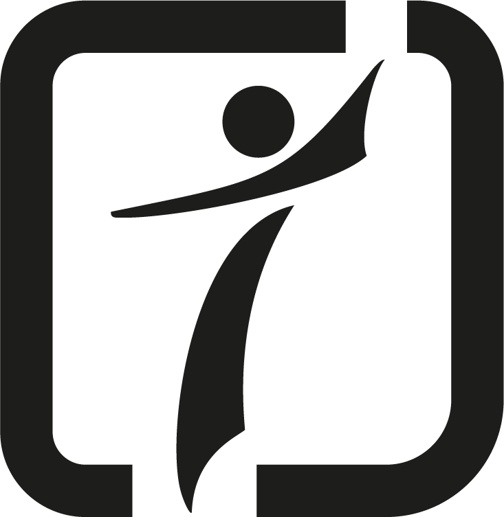
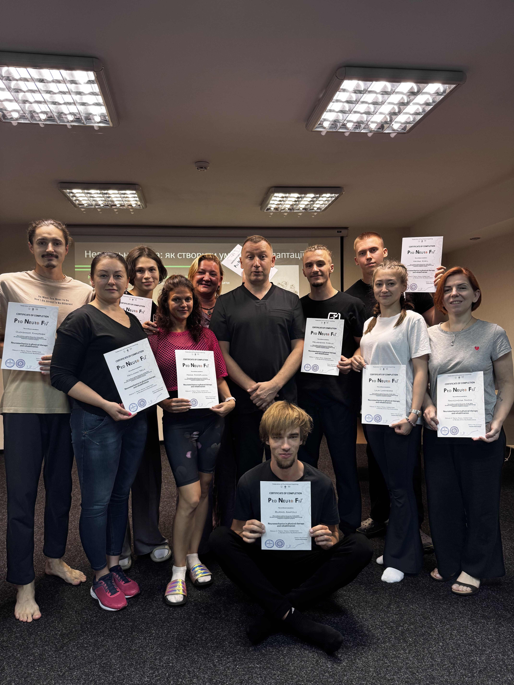
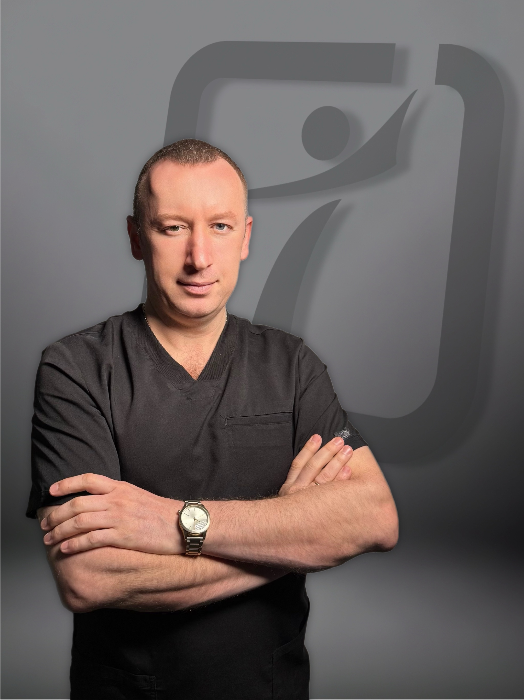

Нейромеханика как методика
Нейромеханика — это современный функциональный подход к работе с телом, который рассматривает организм как единую систему.
ПодробнееПрактическая образовательная программа для специалистов, которые хотят лучше понимать тело, видеть реальные причины нарушений и работать системно: от диагностики до эффективной коррекции и устойчивого результата.
Кому подходит
ProNeuroFit — это система, которая объединяет диагностику, коррекцию и движение — в единую модель работы с телом человека.
Онлайн записьЧто такое ProNeuroFit

Это не набор техник. Это структурированный подход, в котором специалист понимает:
Программа сочетает:
Что такое нейромеханика

Нейромеханика — это современный функциональный подход к работе с телом, который рассматривает организм как единую систему.
Подробнее
Задача специалиста — не просто убрать симптом, а понять, почему система была вынуждена его создать.
Подробнее


Нейромеханика помогает специалисту работать безопасно, логично, физиологично, более точно и с более устойчивым результатом.
Подробнее
Нейромеханика — это подход, в котором специалист понимает, как формируется проблема и как помочь организму восстановить более правильную функцию.
Подробнее
Программа обучения
Каждый модуль — отдельный практический семинар и часть единой системы обучения. Программа построена последовательно: от основ понимания движения, диагностики и диалога с телом — к фасциальной работе и биодинамике — затем к функциональным коррекциям через прямой и непрямой подход — и далее к интеграции всех полученных знаний в работе с позвоночником и краниальными структурами.
«Нейромеханика в постурологии: основы функционального тестирования и мануальных коррекций»
Подробнее«Фасциальные мануальные коррекции в реабилитационной нейромеханике. Основы биодинамики»
Подробнее«Функциональные мануальные коррекции в реабилитационной нейромеханике: прямой и непрямой подход»
Подробнее«Нейромеханика позвоночника и черепа: диагностика и функциональные мануальные коррекции»
ПодробнееДля кого это обучение

Для кого это обучение
Что получит специалист
Преподаватель
Сергей Мелашенко
Система ProNeuroFit создана на основе многолетней клинической практики, преподавания и постоянного поиска более точной, безопасной и эффективной модели помощи пациенту.

ProNeuroFit
Это обучение для тех, кто хочет выйти за рамки набора техник и перейти к системной профессиональной работе с телом человека.
Программа сочетает:
Курс состоит из 4 последовательных модулей.
Уже после первого модуля специалист может внедрять принципы нейромеханики в практику.